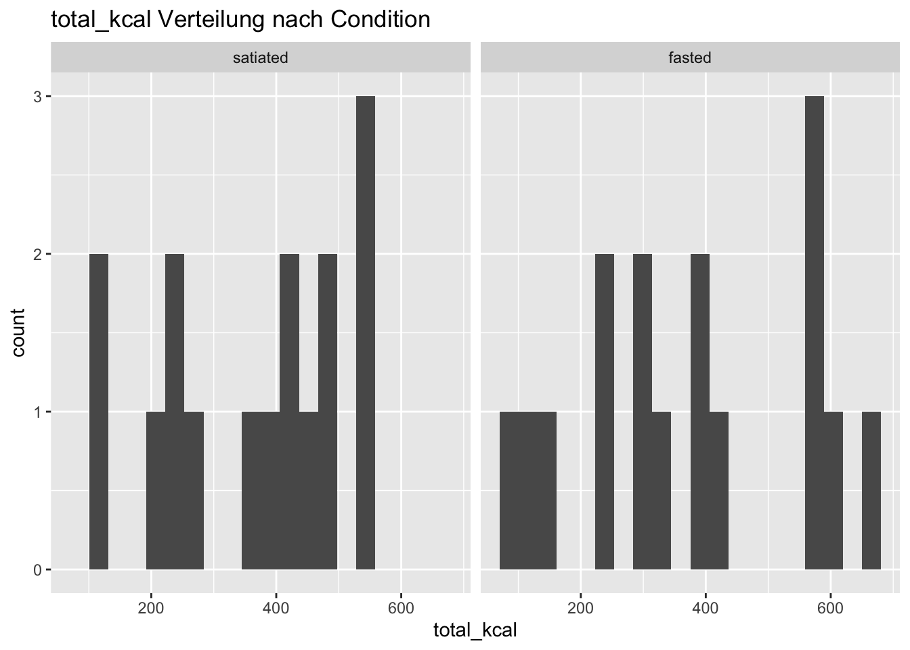
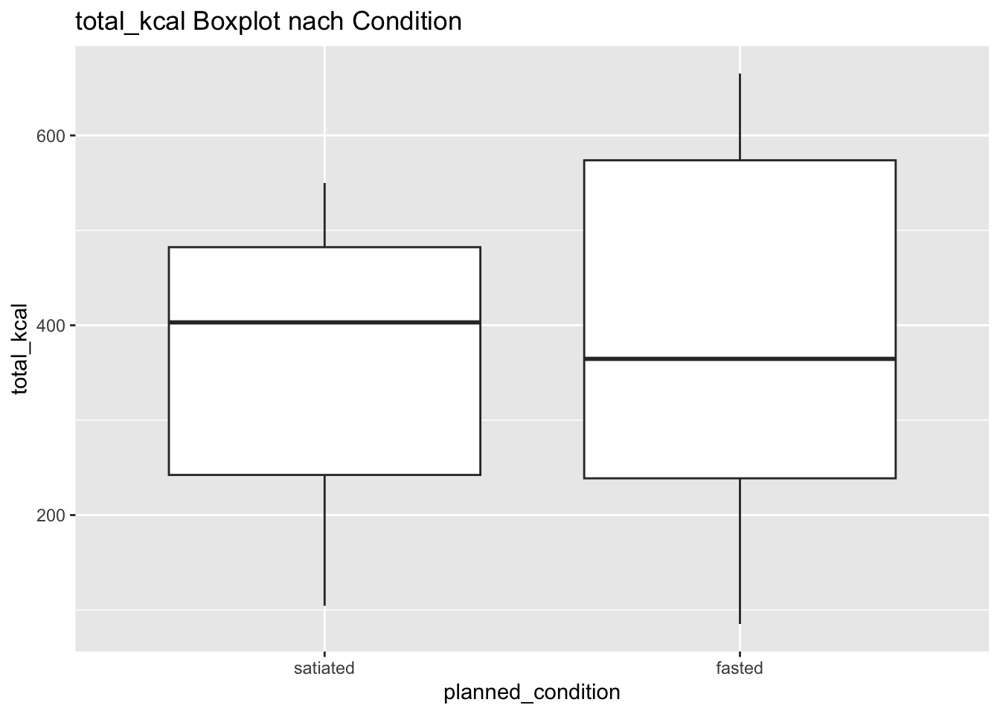
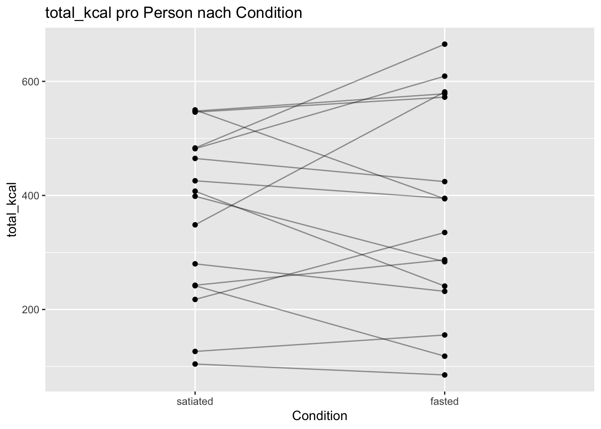
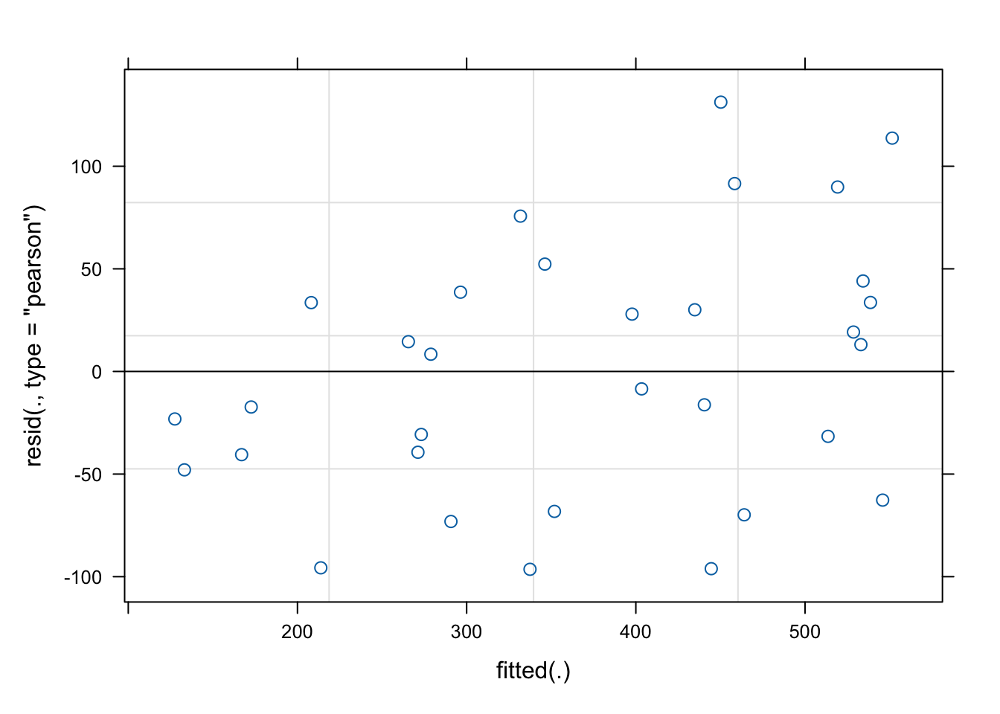

analysis_session
Session-Level Datensatz mit einer Zeile pro Person und Session. Zentrale Basis aller Analysen.
ids_complete
Personen mit zwei gültigen Sessions. Definiert das designkonforme Within-Subject Sample.
dat_main
Complete-Case Sample für die Hauptanalyse ohne Berücksichtigung der Reihenfolge.
order_tbl
Person-Level Tabelle mit Information zur Reihenfolge der Bedingungen.
dat_main_order
dat_main erweitert um die Variable order_group.
dat_main_final
Finaler Analyse-Datensatz für alle Hauptmodelle. Enthält planned_condition und order_group als Kovariate. Grundlage für Hauptanalysen, Moderationen und Sensitivitätsanalysen.
Moderator-Samples
dat_main_final gefiltert auf nicht fehlende Moderatorwerte, zB dat_main_srs oder dat_main_sses.
Sensitivitäts-Samples
Varianten von dat_main_final zur Prüfung der Robustheit, zB ohne Mismatch-Sessions, mit log-Transformation oder ohne obere 1 Prozent Extremwerte.
blood_wide
Wide-Format Datensatz für gepaarte Tests der Blutmarker.
Analysis
Analyse Stichproben definieren und dokumentieren
Was man macht? Man berechnet, wie viele Personen für welche Analyse zur Verfügung stehen: within Subject Analysen brauchen zwei Sessions pro Person Moderation braucht zusätzlich Moderatorwerte
Wieso man das macht? So weiss man vor dem Modellieren exakt, welches N man verwendet, und man kann es später im Ergebnisteil korrekt berichten.
Anzahl Personen insgesamt Anzahl Personen mit zwei Sessions Anzahl Personen mit gültigen Moderatorwerten
Methodenteil: “Primary analyses were conducted using within subject mixed effects models including only participants with complete data for both experimental sessions. The primary outcome was total energy intake (total_kcal). Planned metabolic condition (fasted vs satiated) was entered as a fixed effect, with a random intercept for participant. Stress reactivity (SRS) was tested as a continuous moderator.”
# --------------------------------------------------# Sample sizes for planned analyses# --------------------------------------------------# Hauptsample: complete cases für within subject Analysenids_complete <- analysis_session |>filter(!is.na(planned_condition)) |>distinct(fastress_id, session) |>count(fastress_id, name ="n_sessions") |>filter(n_sessions ==2) |>pull(fastress_id)
feste Analyse Samples definieren
Was: fixe Datensätze erstellen, die ich danach konsequent in allen Modellen verwende.
Warum: So bleibt das N stabil und ich berichte später exakt dieselben Samples, die ich wirklich analysiert habe.
# A tibble: 2 × 2
order_group n
<fct> <int>
1 satiated_first 8
2 fasted_first 8
Merge die Order Variable in dat_main Erwartung n_missing_order ist 0
dat_main_order <- dat_main |>left_join(order_tbl |>select(fastress_id, order_group), by ="fastress_id")# ============================================================# QC: Jede Person muss beide Conditions haben# ============================================================dat_main_order |>group_by(fastress_id) |>summarise(n_sessions =n_distinct(session),n_conditions =n_distinct(planned_condition),.groups ="drop" ) |>count(n_sessions, n_conditions)
# A tibble: 1 × 3
n_sessions n_conditions n
<int> <int> <int>
1 2 2 16
# Erwartung: # n_sessions = 2 -> Jede Person hat zwei Sessions# n_condiriona = 2 -> Jede Person hat einmal fasted und einmal satiateddat_main_order |>summarise(n_rows =n(),n_ids =n_distinct(fastress_id),n_missing_order =sum(is.na(order_group)) )
# ============================================================# Finaler Hauptdatensatz für Hauptanalysen# ============================================================# Auch wenn der Ordereffekt nicht signifikant war, ist es bei einem Cross-over Design sauberer, ihn als Kovariate kontrolliert mitzunehmen.dat_main_final <- dat_main_order# = Ab jetzt laufen die Hauptmodelle mit dat_main_final, nicht mehr mit dat_main.
Schneller deskriptiver Order Check —> Das ist kein Test, nur ein Blick ob es grob anders aussieht.
Wir testen drei Modelle
A Basismodell ohne Order
B plus Order Haupteffekt
C plus Interaktion planned_condition mal order_group
–> Wenn C gegen B nicht besser wird, gibt es keinen Hinweis, dass der Condition Effekt von der Reihenfolge abhaengt.
Linear mixed model fit by maximum likelihood . t-tests use Satterthwaite's
method [lmerModLmerTest]
Formula: total_kcal ~ planned_condition * order_group + (1 | subject)
Data: dat_main_order
AIC BIC logLik -2*log(L) df.resid
412.5 421.3 -200.3 400.5 26
Scaled residuals:
Min 1Q Median 3Q Max
-1.20920 -0.63970 -0.05265 0.51530 1.73497
Random effects:
Groups Name Variance Std.Dev.
subject (Intercept) 19711 140.40
Residual 5665 75.27
Number of obs: 32, groups: subject, 16
Fixed effects:
Estimate Std. Error df
(Intercept) 319.67 56.32 19.96
planned_conditionfasted 45.77 37.63 16.00
order_groupfasted_first 94.01 79.65 19.96
planned_conditionfasted:order_groupfasted_first -80.23 53.22 16.00
t value Pr(>|t|)
(Intercept) 5.676 1.5e-05 ***
planned_conditionfasted 1.216 0.242
order_groupfasted_first 1.180 0.252
planned_conditionfasted:order_groupfasted_first -1.507 0.151
---
Signif. codes: 0 '***' 0.001 '**' 0.01 '*' 0.05 '.' 0.1 ' ' 1
Correlation of Fixed Effects:
(Intr) plnnd_ ordr__
plnnd_cndtn -0.334
ordr_grpfs_ -0.707 0.236
plnnd_cn:__ 0.236 -0.707 -0.334
confint(m_order_int, method ="Wald")
2.5 % 97.5 %
.sig01 NA NA
.sigma NA NA
(Intercept) 209.28091 430.05659
planned_conditionfasted -27.99273 119.53023
order_groupfasted_first -62.09947 250.12447
planned_conditionfasted:order_groupfasted_first -184.54073 24.08823
Interpretation Wenn anova(m_order_add, m_order_int) nicht signifikant ist –> dann kein Hinweis auf Reihenfolge als Moderator des Condition Effekts
Wenn anova(m_base, m_order_add) signifikant ist –> dann gibt es einen generellen Unterschied zwischen fasted_first und satiated_first, unabhängig von Condition
Satz für den Methodenteil oder Ergebnisteil Wenn nichts signifikant “Order effects were examined by adding an order factor indicating whether participants completed the fasted condition in the first session. No evidence for order dependent effects was observed.”
Wenn signifikant “Order effects were observed, indicating that outcomes differed depending on whether the fasted condition was completed first. Therefore, order was retained as a covariate in all primary models.”
# Paired t Test: strong > mildt.test( stress_person$strong_mean_person, stress_person$mild_mean_person,paired =TRUE)
Paired t-test
data: stress_person$strong_mean_person and stress_person$mild_mean_person
t = 6.522, df = 15, p-value = 9.654e-06
alternative hypothesis: true mean difference is not equal to 0
95 percent confidence interval:
1.560261 3.075155
sample estimates:
mean difference
2.317708
# Werte robust zu numerisch konvertierenblood_wide <- blood_wide |>mutate(across(starts_with("ketones_pre"), ~ readr::parse_number(as.character(.x))),across(starts_with("glucose_pre"), ~ readr::parse_number(as.character(.x))) )# Paired t testst.test(blood_wide$ketones_pre_fasted, blood_wide$ketones_pre_satiated, paired =TRUE)
Paired t-test
data: blood_wide$ketones_pre_fasted and blood_wide$ketones_pre_satiated
t = 1.5718, df = 14, p-value = 0.1383
alternative hypothesis: true mean difference is not equal to 0
95 percent confidence interval:
-0.04374391 0.28374391
sample estimates:
mean difference
0.12
Paired t-test
data: blood_wide$glucose_pre_fasted and blood_wide$glucose_pre_satiated
t = -3.4592, df = 15, p-value = 0.003505
alternative hypothesis: true mean difference is not equal to 0
95 percent confidence interval:
-1.4343442 -0.3406558
sample estimates:
mean difference
-0.8875
Moderator-spezifische Samples
Was? Für jeden Moderator einen eigenen Analyse-Datensatz erstellen
Interpretation: z.B. 32 Zeilen und 16 IDs -> dann fehlen keine Moderatorwerte in den complete cases
# ============================================================# Moderator spezifische Samples# ============================================================dat_main_srs <- dat_main_final |>filter(!is.na(srs_c))dat_main_sses <- dat_main_final |>filter(!is.na(sses_c))dat_main_cerq_adaptive <- dat_main_final |>filter(!is.na(cerq_adaptive_c))dat_main_cerq_maladaptive <- dat_main_final |>filter(!is.na(cerq_maladaptive_c))dat_main_stadit <- dat_main_final |>filter(!is.na(stadit_c))dat_main_edeq <- dat_main_final |>filter(!is.na(edeq_restraint_c))# RQ2 Sample (kommt erst nach Stress Merge, aber Platzhalter ok)# dat_rq2 wird später erstellt# ============================================================# Dokumentation der Ns# ============================================================sample_n <-tibble(sample =c("dat_main_final","dat_main_srs","dat_main_sses","dat_main_cerq_adaptive","dat_main_cerq_maladaptive","dat_main_stadit","dat_main_edeq" ),n_rows =c(nrow(dat_main_final),nrow(dat_main_srs),nrow(dat_main_sses),nrow(dat_main_cerq_adaptive),nrow(dat_main_cerq_maladaptive),nrow(dat_main_stadit),nrow(dat_main_edeq) ),n_ids =c(n_distinct(dat_main$fastress_id),n_distinct(dat_main_srs$fastress_id),n_distinct(dat_main_sses$fastress_id),n_distinct(dat_main_cerq_adaptive$fastress_id),n_distinct(dat_main_cerq_maladaptive$fastress_id),n_distinct(dat_main_stadit$fastress_id),n_distinct(dat_main_edeq$fastress_id) ))sample_n
Wieso: Um früh zu sehen, ob zB. total_kcal stark schief ist oder ob einzelne Sessions extrem sind. Das beeinflusst Sensitivitätstransformationen und die Interpretation.
# ============================================================# Outcome checks (Verteilungen, Nullen, Ausreisser)# ============================================================# Outcomes, die du prüfen willstoutcomes <-c("total_kcal", "high_kcal", "low_kcal", "prop_high_kcal")# 8.1 Anteil Nullen pro Outcome (nur Sessions mit Condition)dat_main_final |>summarise(across(all_of(outcomes), ~mean(.x ==0, na.rm =TRUE), .names ="p_zero_{.col}"))
# 8.4 Quick Plots (optional, aber hilfreich)dat_main_final |>ggplot(aes(x = total_kcal)) +geom_histogram(bins =20) +facet_wrap(~planned_condition) +labs(title ="total_kcal Verteilung nach Condition")

dat_main_final |>ggplot(aes(x = planned_condition, y = total_kcal)) +geom_boxplot() +labs(title ="total_kcal Boxplot nach Condition")

Interpretation: Es gibt Variabilität, aber nicht sofort etwas absurd Unplausibles.
Die Range ist breit, aber bei Snackintake in einem Laborparadigma noch nicht automatisch problematisch.
Deskriptive Statistik nach Condition
Was man macht? Man schaut sich die Outcomes (total_kcal, high_kcal, low_kcal, prop_high_kcal) nach planned condition an.
Wieso man das macht? Das ist der erste Plausibilitätscheck für den Effekt Man sieht sofort, ob Wertebereiche plausibel sind. Man bekommt Tabellen für den Ergebnisteil
Alle Sessions: explorativer Überblick (nicht für Hypothesentests) Beschreibt alle vorhandenen Sessions -> Manche Personen tragen nur eine Session bei
-> Das ist ok für einen Überblick, aber: fasted und satiated Gruppen bestehen nicht aus denselben Personen Mittelwerte sind nicht direkt vergleichbar => dient als explorativer Überblick
nur complete cases: Jede Person kommt genau einmal in fasted und einmal in satiated vor. Die Mittelwerte sind within subject vergleichbar => designkonforme Beschreibung
Satz für Methodenteil: “Primary analyses were conducted on participants with complete data for both experimental sessions, ensuring a within subject comparison of fasted and satiated conditions.”
Random Effects prüfen
Was: Testen, ob neben random intercept auch random slope für planned_condition sinnvoll ist.
Warum: In einem within subject Cross over Design reagieren Personen oft unterschiedlich stark auf fasted versus satiated. Das bildet random slope ab.
Ein Random-Slope für planned_condition wird nur übernommen,
wenn das Modell klar besser passt und stabil geschätzt werden kann.
erst random intercept als Hauptmodell
dann random slope prüfen
random slope nur übernehmen, wenn
Modell stabil ist
keine starken Warnungen auftreten
und der Fit sichtbar besser ist
# wenn N genügend gross, prüfen -> sonst weglassen# ============================================================# Modellstruktur prüfen: Random Intercept versus Random Slope# ============================================================# Vor der finalen Hauptanalyse aktivieren# m_ri <- lmer(# total_kcal ~ planned_condition + order_group + (1 | subject),# data = dat_main_final,# REML = FALSE# )# m_rs <- lmer(# total_kcal ~ planned_condition + order_group + (1 + planned_condition || subject),# data = dat_main_final,# REML = FALSE# )# anova_ri_rs <- anova(m_ri, m_rs)# print(anova_ri_rs)# summary(m_rs)# isSingular(m_rs, tol = 1e-4)use_random_slope <-FALSE
Modelle report ready machen
Was: Hilfsfunktionen bauen, die für jedes Outcome automatisch Modell, CI, Vergleich und Effektgrösse ausgeben.
Warum: Copy Paste Fehler sparen und konsistente Outputs.
(Condition Effekt) Was man macht? Man rechnet das erste Mixed Model: Outcome wird durch planned condition vorhergesagt, mit Zufallsinterzept pro Person.
Wieso man das macht? Das ist das Referenzmodell. Es zeigt den generellen Unterschied fasted vs satiated. Es ist die Grundlage für spätere Moderationen
m0 ist jetzt nicht mehr das reine Nullmodell, sondern das Baseline-Modell mit Order
m1 testet dann, ob planned_condition über order_group hinaus zusätzliche Erklärung liefert
Linear mixed model fit by maximum likelihood . t-tests use Satterthwaite's
method [lmerModLmerTest]
Formula: high_kcal ~ planned_condition + order_group + (1 | subject)
Data: dat_main_final
AIC BIC logLik -2*log(L) df.resid
390.3 397.6 -190.2 380.3 27
Scaled residuals:
Min 1Q Median 3Q Max
-1.43721 -0.51806 -0.05304 0.53560 1.60683
Random effects:
Groups Name Variance Std.Dev.
subject (Intercept) 7575 87.03
Residual 3803 61.67
Number of obs: 32, groups: subject, 16
Fixed effects:
Estimate Std. Error df t value Pr(>|t|)
(Intercept) 218.225 36.103 19.179 6.045 7.85e-06 ***
planned_conditionfasted -9.267 21.804 16.000 -0.425 0.676
order_groupfasted_first 30.675 48.673 16.000 0.630 0.537
---
Signif. codes: 0 '***' 0.001 '**' 0.01 '*' 0.05 '.' 0.1 ' ' 1
Correlation of Fixed Effects:
(Intr) plnnd_
plnnd_cndtn -0.302
ordr_grpfs_ -0.674 0.000
confint(m1_high, method ="Wald")
2.5 % 97.5 %
.sig01 NA NA
.sigma NA NA
(Intercept) 147.46525 288.98475
planned_conditionfasted -52.00317 33.46817
order_groupfasted_first -64.72267 126.07267
Linear mixed model fit by maximum likelihood . t-tests use Satterthwaite's
method [lmerModLmerTest]
Formula: low_kcal ~ planned_condition + order_group + (1 | subject)
Data: dat_main_final
AIC BIC logLik -2*log(L) df.resid
376.0 383.3 -183.0 366.0 27
Scaled residuals:
Min 1Q Median 3Q Max
-1.3182 -0.5618 -0.2146 0.5677 1.9333
Random effects:
Groups Name Variance Std.Dev.
subject (Intercept) 4226 65.01
Residual 2651 51.49
Number of obs: 32, groups: subject, 16
Fixed effects:
Estimate Std. Error df t value Pr(>|t|)
(Intercept) 121.50 27.87 19.77 4.359 0.000311 ***
planned_conditionfasted 14.92 18.21 16.00 0.820 0.424418
order_groupfasted_first 23.22 37.25 16.00 0.623 0.541810
---
Signif. codes: 0 '***' 0.001 '**' 0.01 '*' 0.05 '.' 0.1 ' ' 1
Correlation of Fixed Effects:
(Intr) plnnd_
plnnd_cndtn -0.327
ordr_grpfs_ -0.668 0.000
confint(m1_low, method ="Wald")
2.5 % 97.5 %
.sig01 NA NA
.sigma NA NA
(Intercept) 66.87359 176.12704
planned_conditionfasted -20.75823 50.60448
order_groupfasted_first -49.79328 96.24203
Linear mixed model fit by maximum likelihood . t-tests use Satterthwaite's
method [lmerModLmerTest]
Formula: prop_high_kcal ~ planned_condition + order_group + (1 | subject)
Data: dat_main_final
AIC BIC logLik -2*log(L) df.resid
-31.9 -24.5 20.9 -41.9 27
Scaled residuals:
Min 1Q Median 3Q Max
-2.22608 -0.35331 -0.08273 0.67515 2.09593
Random effects:
Groups Name Variance Std.Dev.
subject (Intercept) 0.003679 0.06066
Residual 0.012565 0.11209
Number of obs: 32, groups: subject, 16
Fixed effects:
Estimate Std. Error df t value Pr(>|t|)
(Intercept) 0.636910 0.040471 25.177866 15.738 1.54e-14 ***
planned_conditionfasted -0.023405 0.039631 16.000000 -0.591 0.563
order_groupfasted_first 0.004253 0.049905 16.000000 0.085 0.933
---
Signif. codes: 0 '***' 0.001 '**' 0.01 '*' 0.05 '.' 0.1 ' ' 1
Correlation of Fixed Effects:
(Intr) plnnd_
plnnd_cndtn -0.490
ordr_grpfs_ -0.617 0.000
confint(m1_prop, method ="Wald")
2.5 % 97.5 %
.sig01 NA NA
.sigma NA NA
(Intercept) 0.5575883 0.71623091
planned_conditionfasted -0.1010799 0.05427075
order_groupfasted_first -0.0935585 0.10206378
2.5 % 97.5 %
.sig01 NA NA
.sigma NA NA
(Intercept) 5.3290720 6.0501048
planned_conditionfasted -0.1932547 0.1315313
order_groupfasted_first -0.2679458 0.7255498
Sensitivität: Ausreisser Regel a priori
Was: Obere Extremwerte markieren, zB über dem 99 Prozent Quantil, und das Modell ohne diese Sessions rechnen.
Warum: Damit du später nicht spontan entscheidest, sondern eine klare Regel hast.
Warum: zwei Plot Typen, die man in Resultaten und Anhang braucht.
# ============================================================# Plots: within subject Spaghetti Plot für total_kcal# ============================================================dat_main_final |>ggplot(aes(x = planned_condition, y = total_kcal, group = subject)) +geom_line(alpha =0.4) +geom_point() +labs(title ="total_kcal pro Person nach Condition", x ="Condition", y ="total_kcal")

# Interaktions Plot ohne Zusatzpakete, simpel ueber Vorhersagen aus dem Modell:# ============================================================# Plots: Interaktion planned_condition mal srs_c als Beispiel# ============================================================m_srs_int <-lmer( total_kcal ~ planned_condition * srs_c + (1| subject),data = dat_main_srs,REML =FALSE)# Grid fuer Vorhersagensrs_seq <-seq(from =quantile(dat_main_srs$srs_c, 0.05, na.rm =TRUE),to =quantile(dat_main_srs$srs_c, 0.95, na.rm =TRUE),length.out =50)pred_grid <-expand.grid(planned_condition =levels(dat_main_srs$planned_condition),srs_c = srs_seq,order_group ="satiated_first")pred_grid$pred <-predict(m_srs_int, newdata = pred_grid, re.form =NA)pred_grid |>as_tibble() |>ggplot(aes(x = srs_c, y = pred, linetype = planned_condition)) +geom_line(linewidth =1) +labs(title ="Vorhersage total_kcal: Condition mal SRS", x ="srs_c", y ="predicted total_kcal")
Basismodell Diagnostics
Was: Residuen und Fits prüfen, Einflussreiche Punkte markieren.
Wieso: Mixed Models sind relativ robust, aber ich will wissen, ob zB ein einzelner Fall den Effekt treibt.
# ============================================================# Modellannahmen und Diagnostics für total_kcal (Hauptmodell)# ============================================================m_total <- results_main[["total_kcal"]]$m1# Residuen vs Fitsplot(m_total, which =1)

# QQ Plot der Residuenqqnorm(resid(m_total))qqline(resid(m_total))
# Prozent CI fuer Fixed Effectsconfint(m1_total, method ="Wald")
2.5 % 97.5 %
.sig01 NA NA
.sigma NA NA
(Intercept) 232.01292 447.4377
planned_conditionfasted -50.08215 61.3934
order_groupfasted_first -93.24196 201.0407
# Fixed Effects Tabelle kompaktsummary(m1_total)
Linear mixed model fit by maximum likelihood . t-tests use Satterthwaite's
method [lmerModLmerTest]
Formula: total_kcal ~ planned_condition + order_group + (1 | subject)
Data: dat_main_final
AIC BIC logLik -2*log(L) df.resid
412.7 420.0 -201.3 402.7 27
Scaled residuals:
Min 1Q Median 3Q Max
-1.1986 -0.5271 -0.0006 0.4335 1.6316
Random effects:
Groups Name Variance Std.Dev.
subject (Intercept) 19309 138.96
Residual 6470 80.44
Number of obs: 32, groups: subject, 16
Fixed effects:
Estimate Std. Error df t value Pr(>|t|)
(Intercept) 339.725 54.956 18.284 6.182 7.26e-06 ***
planned_conditionfasted 5.656 28.438 16.000 0.199 0.845
order_groupfasted_first 53.899 75.073 16.000 0.718 0.483
---
Signif. codes: 0 '***' 0.001 '**' 0.01 '*' 0.05 '.' 0.1 ' ' 1
Correlation of Fixed Effects:
(Intr) plnnd_
plnnd_cndtn -0.259
ordr_grpfs_ -0.683 0.000